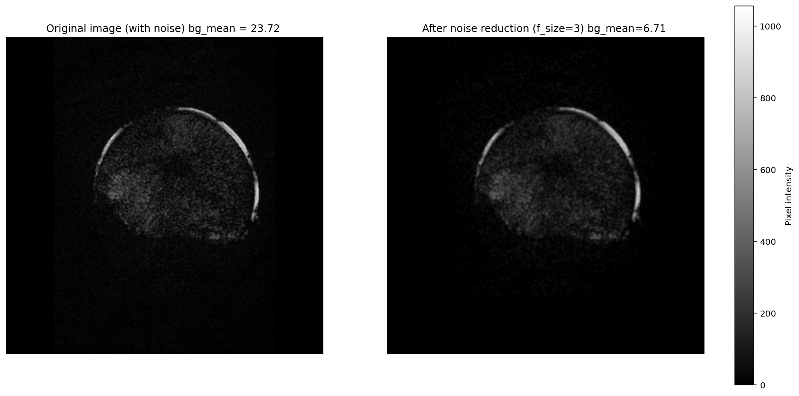

DICOM workflow#
This how-to shows an end-to-end DICOM pipeline using pydicom and mri_noiselab.subtract_noise():
Load a DICOM (
pydicom.dcmread)Select a background ROI (noise-only, avoid zero padding)
Apply noise subtraction with a local window (
f_size)Convert back to a DICOM-compatible integer format
Update metadata (new
SOPInstanceUID) and save a new DICOMVisually compare original vs corrected images
The example DICOM used here is provided in the repository: example.dcm.
Load DICOM and convert pixel data to float#
1
2# --- Import required libraries ---
3import pydicom # DICOM I/O
4import numpy as np # Numerical operations
5import matplotlib.pyplot as plt # Visualization
6from mri_noiselab import subtract_noise # Custom noise reduction function
7
8
9# ============================================================
10# 1. Load DICOM image
11# ============================================================
12
13# Read the DICOM file, containig metadata and pixel data
14# (to open other dicom file replace with the actual file path)
15ds = pydicom.dcmread("..\data\example.dcm")
16
17# Convert pixel data to float for numerical processing
18# (important to avoid integer overflow during calculations)
19img = ds.pixel_array.astype(np.float32)
20
21print(f"Loaded image shape: {img.shape}, datatype: {img.dtype}")
22
Define background ROI and apply noise subtraction#
1# ============================================================
2# 2. Define background region for noise estimation
3# ============================================================
4bg_sample = (slice(0, 100), slice(80, 430))
5# Select a background area (no anatomical signal expected)
6# This region is used to estimate noise statistics
7background = img[bg_sample]
8# (N.B. pay attention to not include the zeros padding!)
9
10# ============================================================
11# 3. Apply noise subtraction
12# ============================================================
13
14# Subtract estimated noise from the image
15# f_size controls the filter/kernel pixel size used in the algorithm
16filter_s = 3
17img_corr = subtract_noise(img, background, f_size=filter_s)
Background ROI advice#
Choose a region with no anatomical signal (pure background noise), and avoid:
any anatomy / signal spillover
zero-padding / masked regions
coil artifacts or structured background
A bad background ROI biases the Rayleigh σ estimate and can degrade the correction.
Convert corrected image back to DICOM format and save#
1# ============================================================
2# 4. Convert corrected image back to DICOM-compatible format
3# ============================================================
4
5# Clip values to the valid DICOM intensity range, no change in contrast
6# (defined in metadata by the number of stored bits)
7img_corr = np.clip(img_corr, 0, 2**ds.BitsStored - 1)
8
9# Convert back to the original integer datatype
10img_corr = img_corr.astype(ds.pixel_array.dtype)
11
12
13# ============================================================
14# 5. Update DICOM dataset and save corrected image
15# ============================================================
16
17# Replace pixel data
18ds.PixelData = img_corr.tobytes()
19
20# Update image dimensions (safety check)
21ds.Rows, ds.Columns = img_corr.shape
22
23# Generate a new SOP Instance UID
24# (mandatory when modifying pixel data)
25ds.SOPInstanceUID = pydicom.uid.generate_uid()
26
27# Save corrected DICOM file
28ds.save_as("../data/corrected_image.dcm")
Key points:
np.clip(…, 0, 2**BitsStored - 1) ensures valid intensity range as defined in dicom metadata
a new SOPInstanceUID is mandatory when pixel data changes to ensure that the processed image is treated as a distinct DICOM object and avoid data conflicts in viewers.
Visual comparison#
1# ============================================================
2# 6. Visual comparison: original vs corrected image
3# ============================================================
4
5# Create side-by-side plots
6fig, axes = plt.subplots(1, 2, figsize=(16, 8))
7
8images = [img, img_corr]
9titles = [f"Original image (with noise) bg_mean = {np.mean(background):.2f} ",
10 f"After noise reduction (f_size={filter_s}) bg_mean={np.mean(img_corr[bg_sample]):.2f} "]
11
12# Shared intensity scale for fair comparison
13vmin = 0
14vmax = max(im.max() for im in images) * 1.2
15
16# Display images
17for ax, image, title in zip(axes, images, titles):
18 im = ax.imshow(image, cmap="gray", vmin=vmin, vmax=vmax)
19 ax.set_title(title)
20 ax.axis("off")
21
22# Add a shared colorbar
23fig.colorbar(
24 im,
25 ax=axes,
26 orientation="vertical",
27 fraction=0.046,
28 pad=0.04,
29 label="Pixel intensity"
30)
31plt.show()
Background noise intensity is reduced.
